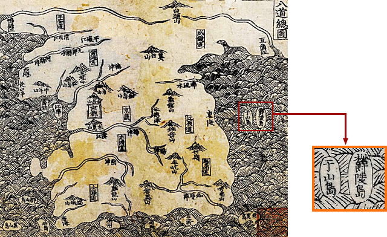
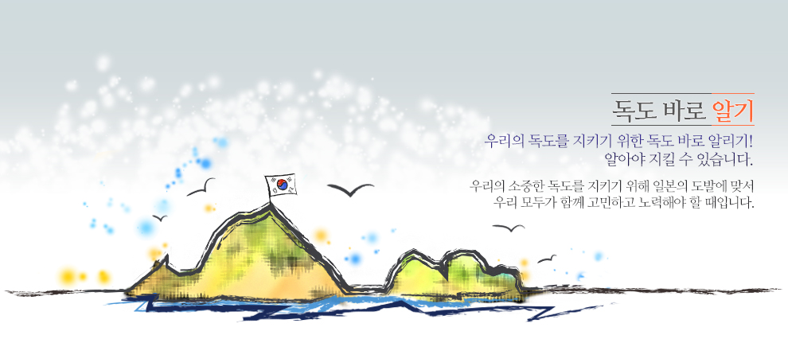

독도는 오랜 역사를 가지고 있으며, 대한민국의 중요한 영토 중 하나입니다. 독도에 대한 최초의 기록은 512년 신라 지증왕 때로 거슬러 올라갑니다. 당시 이사부 장군이 우산국을 정복하면서 독도는 신라의 영토가 되었습니다. 그 이후로 독도는 한국의 역사 속에서 중요한 위치를 차지해 왔습니다.
1905년 일본은 러일 전쟁 중 독도를 무단으로 점령하고, 시마네현에 편입시키는 조치를 취했습니다. 그러나 대한민국은 광복 이후 독도를 다시 되찾았으며, 1952년 이승만 대통령의 평화선 선언을 통해 독도의 영유권을 확고히 했습니다. 독도는 한국전쟁 이후 대한민국의 영토로 명백히 인식되고 있습니다.
독도는 대한민국 정부에 의해 관리되고 있으며, 경비대가 상주하고 있습니다. 또한 독도의 역사적 중요성을 알리기 위해 다양한 교육 프로그램과 전시회가 개최되고 있습니다. 독도에 대한 연구와 홍보 활동도 활발히 이루어지고 있습니다. 독도는 한국 국민들에게 중요한 상징적인 장소로, 많은 이들이 독도의 역사적 의미를 기억하고 있습니다.
